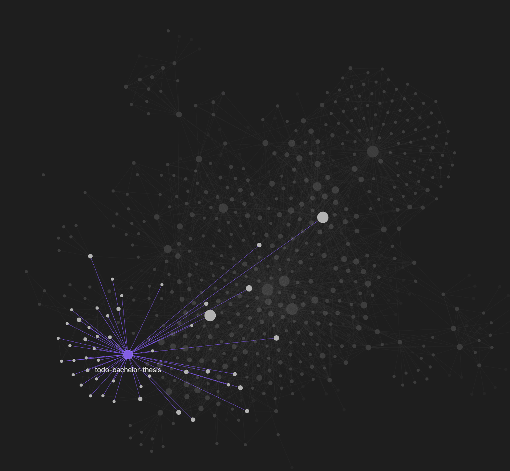
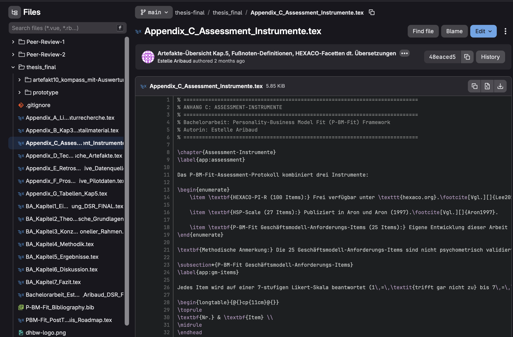
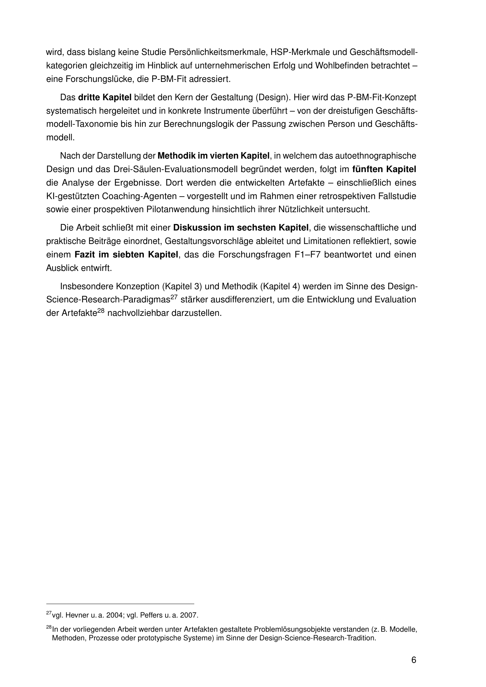
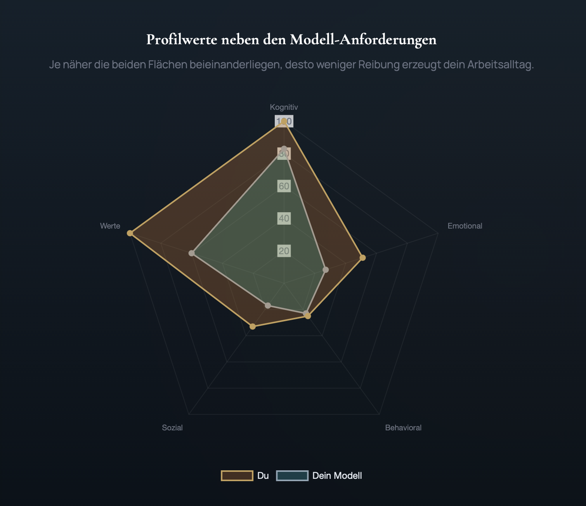
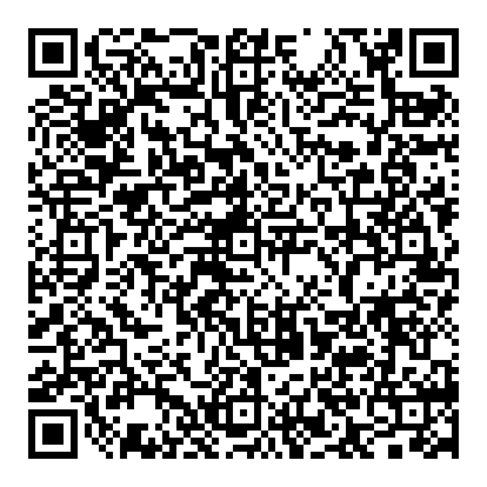

Erkenne dich selbst. Spruch über dem Apollontempel von Delphi.
Simon Sinek setzt das Why ins Zentrum. Dieser Talk geht eine Spirale tiefer: Erst die Person, dann der Sinn, dann das Modell.
Estelle Aribaud · MoselMinds GmbH
Wie Quellen, Struktur, Versionen, Text, Code und Verantwortung organisiert werden können.
Welche Erkenntnisse aus der Thesis für unternehmerische Entscheidungen relevant sind.
KI schreibt keine gute Thesis.
KI verstärkt das System, in dem sie arbeitet.
Ja, regelmäßig
für konkrete Ziele.
Eher sporadisch
oder gar nicht.
Schreibt eine 1 oder eine 0 in den Chat.
Die KI musste nicht raten, wo der Arbeitsstand liegt. Sie konnte den Kontext lesen.

Obsidian Download: https://obsidian.md
Wie eine Rückgängig-Funktion, die nichts vergisst: jeder Stand gespeichert, jeder größere Schritt begründet.

Git Download: https://git-scm.com/install/
LaTeX nimmt Formatierungsarbeit ab:
Quellen, Verweise, Tabellen, Abbildungen und Layout – automatisch konsistent,
auch wenn die Arbeit komplexer wird.
\section{Aufbau und Vorgehensweise der Arbeit}
\label{sec:aufbau}
Die Arbeit gliedert sich in sieben Phasen des Erkenntnisgewinns, die sich in sieben Kapitel niederschlagen: Einleitung, Theoretische Grundlagen, Konzeption des P-BM-Fit, Methodik, Analyse und Ergebnisse, Diskussion und Gestaltungsvorschläge sowie Antworten, Ausblick und Fazit.
Im \textbf{zweiten Kapitel} wird das theoretische Fundament gelegt. Geschäftsmodellforschung, Persönlichkeitsforschung und P-E-Fit-Theorie werden so miteinander verzahnt, dass deutlich wird, dass bislang keine Studie Persönlichkeitsmerkmale, HSP-Merkmale und Geschäftsmodellkategorien gleichzeitig im Hinblick auf unternehmerischen Erfolg und Wohlbefinden betrachtet – eine Forschungslücke, die P-BM-Fit adressiert.
Das \textbf{dritte Kapitel} bildet den Kern der Gestaltung (Design). Hier wird das P-BM-Fit-Konzept systematisch hergeleitet und in konkrete Instrumente überführt – von der dreistufigen Geschäftsmodell-Taxonomie bis hin zur Berechnungslogik der Passung zwischen Person und Geschäftsmodell.
Nach der Darstellung der \textbf{Methodik im vierten Kapitel}, in welchem das autoethnographische Design und das Drei-Säulen-Evaluationsmodell begründet werden, folgt im \textbf{fünften Kapitel} die Analyse der Ergebnisse. Dort werden die entwickelten Artefakte – einschließlich eines KI-gestützten Coaching-Agenten – vorgestellt und im Rahmen einer retrospektiven Fallstudie sowie einer prospektiven Pilotanwendung hinsichtlich ihrer Nützlichkeit untersucht.
Die Arbeit schließt mit einer \textbf{Diskussion im sechsten Kapitel}, die wissenschaftliche und praktische Beiträge einordnet, Gestaltungsvorschläge ableitet und Limitationen reflektiert, sowie einem \textbf{Fazit im siebten Kapitel}, das die Forschungsfragen F1–F7 beantwortet und einen Ausblick entwirft.
Insbesondere Konzeption (Kapitel 3) und Methodik (Kapitel 4) werden im Sinne des Design-Science-Research-Paradigmas\footcites[vgl.][]{Hevner2004}[vgl.][]{Peffers2007} stärker ausdifferenziert, um die Entwicklung und Evaluation der Artefakte\footnote{In der vorliegenden Arbeit werden unter Artefakten gestaltete Problemlösungsobjekte verstanden (z.\,B. Modelle, Methoden, Prozesse oder prototypische Systeme) im Sinne der Design-Science-Research-Tradition.} nachvollziehbar darzustellen.
LaTeXDownload: https://www.latex-project.org/get/

| Werkzeug | Charakter | Tier | Hinweis |
|---|---|---|---|
| Perplexity | Die Rechercheurin: Echtzeit-Websuche mit verlinkten Quellenbelegen — deutlich seltener halluzinierend als reine LLMs | Free / Pro | Free reicht für Recherche; trotzdem stets Quellen prüfen — auch Perplexity kann Quellen falsch zusammenfassen skywork+1 |
| SciSpace | Die Bibliothekarin: Volltextsuche über 280 Mio. wissenschaftliche Paper, Insight-Tabellen, PDF-Chat | Free / ab ~12 $/M | Free stark limitiert (30 Previews, 5 Bibliografien/Monat, nur Top-5-Zusammenfassung); Deep Review nur in Premium aidetectplus |
| Gemini | Der Langkontext-Analyst: verarbeitet bis zu 1 Mio. Token (≈ 1.500 Seiten) in einem Durchgang; stark in Google-Workspace-Integration | Free / Pro 20 $/M | Kostenloses Kontingent ist Flash-Modell (200K Token); 1M-Kontext erst ab Google AI Pro/Ultra — nicht automatisch „Free" datastudios+1 |
| ChatGPT | Der Allrounder: Brainstorming, Textschliff, strukturierte Ausgaben — kreativ stark, aber höchste Halluzinierungsrate bei Quellenangaben | Free / Plus 20 $/M | Erfindet Quellen — GPT-4o fabriziert ~20% aller akademischen Zitate, 56% sind fehlerhaft oder erfunden; nie ohne Verifikation nutzen studyfinds+1 |
| Claude Code | Der Integrator: terminalbas. Coding-Agent mit 1M-Token-Kontext; schreibt, refaktoriert und debuggt direkt im Projekt | ab 20 $/M (Pro) | Free-Plan enthält Claude Code nicht; ab Pro (20 $/M); Intensiv-Nutzung (Multi-Agenten, ganztägig) → Max 5x (100 $/M) oder Max 20x (200 $/M) realistischer howdoiuseai+1 |
Leistungsfähigkeit und Beschränkungen der KI-Systeme aktiv prüfen.
Wissenschaftliche Zielsetzungen und Konzepte selbst entwickeln.
Faustregel: KI darf helfen. Verantwortung, Auswahl und Begründung bleiben bei dir.
Gibt es einen messbaren Zusammenhang zwischen Persönlichkeit und Geschäftsmodell?
Und wenn ja: Wie macht man das sichtbar?

Pivot zu Hybrid-Modell:
Fit 81.
Gleiche Person. Gleiches Thema. Andere Form.
Service
vorher
Hybrid
nachher

kairos.singularityweft.work · 30-45 Min · kostenlos
Fragen?
Estelle Aribaud · MoselMinds GmbH · estelle.aribaud@me.com